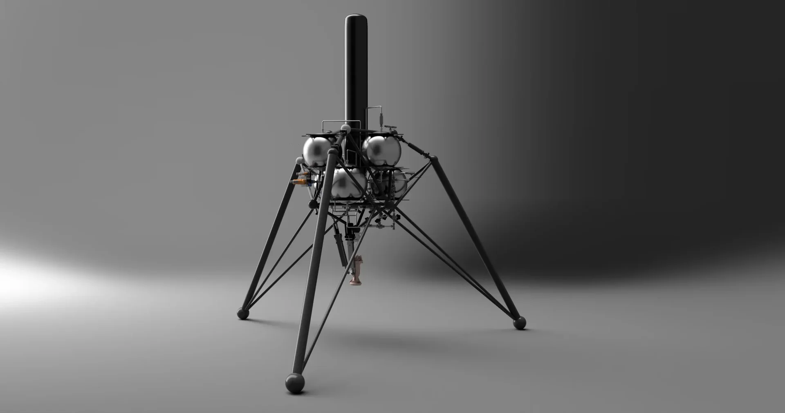

Reference library
Rocketry.
In plain language.
A guide to the propulsion, vehicle, testing, and mission terminology used throughout our work.

A
- Ablation
- Erosion of a heat shield or surface material that carries heat away during flight.
- Aerospike nozzle
- A nozzle concept that keeps good efficiency over a wide range of altitudes.
- Aerodynamics
- The study of how air flows around a rocket and affects drag, lift, and stability.
- Airframe
- The main structural body of a rocket.
- Altitude
- Height above a reference point, usually sea level or launch site.
- Angle of attack
- The angle between a rocket's direction of travel and its reference axis.
- Attitude
- The orientation of a rocket or spacecraft in space.
- Attitude control
- The process of rotating or stabilizing a vehicle to a desired orientation.
- Apogee
- The highest point reached during a rocket's flight.
- Avionics
- Electronic systems used for sensing, control, tracking, and recovery.
B
- Ballistic coefficient
- A measure of how well a rocket or object resists drag in flight.
- Bell nozzle
- A curved rocket nozzle shape designed to improve exhaust expansion and efficiency.
- Black powder
- A traditional low explosive often used in igniters, ejection charges, and small motors.
- Booster
- A rocket stage or attached motor that provides extra thrust during early flight.
- Bulkhead
- A structural plate used to close off or separate sections of a rocket.
- Burn rate
- The speed at which propellant is consumed.
- Burn time
- The total time a motor produces thrust.
C
- Canard
- A small forward control surface used to help steer or stabilize a vehicle.
- Casing
- The outer shell that contains a rocket motor's propellant and internal pressure.
- Characteristic velocity (c-star)
- A combustion performance measure that indicates how effectively an engine generates chamber gas.
- Center of gravity (CG)
- The point where the rocket's weight is balanced.
- Center of pressure (CP)
- The effective point where aerodynamic forces act on the rocket.
- Chamber pressure
- The pressure inside the combustion chamber while the engine is firing.
- Combustion chamber
- The part of the engine where propellant burns and creates hot gas.
- Composite propellant
- A solid propellant made from fuel, oxidizer, and binder mixed together.
- Coupler
- A tube section used to join two airframe sections together.
- Countdown
- The timed sequence of final checks and events before launch.
- Cryogenic propellant
- A very cold liquid propellant, such as liquid oxygen or liquid hydrogen.
D
- Delta-v
- The total change in velocity a rocket can achieve.
- Deployment bag
- A bag used to control the release of a parachute during recovery.
- Drogue chute
- A small parachute used to stabilize descent before the main parachute opens.
- Drag
- The aerodynamic force that resists motion through the air.
- Dry mass
- The mass of the rocket without usable propellant.
- Dual deployment
- A recovery method using a drogue at high altitude and a main chute lower down.
- Dynamic pressure
- The aerodynamic pressure from motion through air, often written as q.
E
- Ejection charge
- A small charge that pushes out a parachute or separates sections for recovery.
- Engine
- A propulsion device that generates thrust by expelling mass.
- Engine cycle
- The method an engine uses to move propellants and power its internal systems.
- Escape velocity
- The minimum speed needed to leave a body's gravity without further propulsion.
- Expander cycle
- A liquid engine cycle that uses heated fuel to drive the turbopump turbines.
- Expansion ratio
- The ratio between a nozzle's exit area and throat area.
F
- Fairing
- A smooth outer cover that reduces drag and protects payloads.
- Falcon 9
- A reusable orbital launch vehicle built by SpaceX and widely referenced in modern rocketry.
- Fin
- A stabilizing surface attached to the rocket body.
- Fin flutter
- Dangerous fin vibration caused by aerodynamic forces at high speed.
- Flight computer
- An onboard computer that monitors flight and may trigger recovery events.
- Flight profile
- The planned path and phases of a rocket mission.
- Flux
- The rate of flow of a quantity such as heat, mass, or particles through an area.
G
- G-load
- Acceleration force measured relative to Earth's gravity.
- Gas generator
- A device that creates hot gas to drive turbines or other systems.
- Gimbal
- A pivoting engine mount used for thrust vector control.
- Grain
- The shaped block of solid propellant inside a solid rocket motor.
- Guidance
- The system that determines the desired flight path.
H
- Heat shield
- Protective material used to survive high heating during ascent or reentry.
- Hold-down
- A restraint that keeps a rocket attached to the pad until launch release.
- Hypersonic
- The flight regime at very high speed, typically Mach 5 or greater.
- Hypergolic
- Propellants that ignite on contact without a separate ignition source.
I
- Igniter
- A device that starts the motor or engine combustion process.
- Impulse
- The total push delivered by a rocket engine over time.
- Inert mass
- Mass that does not contribute to propulsion, such as structure and hardware.
- Injector
- The engine component that sprays liquid propellants into the combustion chamber.
- ISP (specific impulse)
- A measure of propellant efficiency, usually given in seconds.
- Interstage
- The structural section that connects two rocket stages.
J
- Jet vane
- A control surface placed in exhaust flow to steer a rocket.
K
- Kármán line
- A commonly used boundary of space at 100 kilometers above Earth.
L
- Launch azimuth
- The compass direction of launch.
- Launch escape system
- A safety system that can rapidly pull a crew capsule away from a failing rocket.
- Launch lug
- A small tube that guides a model rocket along the launch rod.
- Launch rail
- A rigid guide used instead of a rod for larger rockets.
- LNG (liquefied natural gas)
- A methane-rich fuel stored as a cryogenic liquid and used in some modern rocket engines.
- Liquid rocket engine
- An engine that burns liquid fuel and liquid oxidizer.
- Liquid methane
- A cryogenic rocket fuel, often paired with liquid oxygen in modern engines.
- LOX (liquid oxygen)
- A common cryogenic oxidizer used in liquid rockets.
- LH2 (liquid hydrogen)
- A high-performance cryogenic rocket fuel used in upper stages and heavy-lift systems.
- Lift-off
- The moment a rocket leaves the pad.
M
- Mach number
- Speed relative to the local speed of sound.
- Main chute
- The primary parachute used for final descent and landing.
- Mass fraction
- The portion of total mass made up by a specific component, often propellant.
- Max Q
- The point in flight where aerodynamic pressure is greatest.
- Monopropellant
- A propellant system using a single chemical that decomposes or reacts to produce thrust.
- Multiaxis stabilization
- Control of roll, pitch, and yaw together.
- Multistage rocket
- A rocket made of two or more stages stacked together.
N
- NAR
- National Association of Rocketry, a major model and high-power rocketry organization in the U.S.
- Nose cone
- The front aerodynamic tip of a rocket.
- Nozzle
- The engine part that accelerates exhaust to produce thrust.
- Nozzle throat
- The narrowest part of the nozzle where flow reaches maximum speed.
O
- O/F ratio
- Oxidizer-to-fuel ratio in a propellant mixture.
- Ogive
- A smooth curved nose cone shape commonly used to reduce drag.
- Orbit insertion
- The engine burn or sequence that places a vehicle into its intended orbit.
- Oxidizer
- A substance that provides oxygen or another oxidizing element for combustion.
P
- Pad abort
- An emergency shutdown or escape event that happens before or during launch.
- Payload
- The cargo carried by the rocket, such as instruments, satellites, or experiments.
- Perigee
- The lowest point of an orbit around Earth.
- Pitch
- Rotation of a rocket about its side-to-side axis.
- Plume
- The visible exhaust flow from a rocket engine.
- Preburner
- A small combustion chamber used in some liquid engines to power turbines.
- Pressure-fed
- A propulsion system that pushes propellants into the engine using tank pressure instead of turbopumps.
- Pressurization
- The process of maintaining pressure in tanks or feed systems.
- Propellant
- The fuel and oxidizer, or combined material, used to create thrust.
- Propellant depot
- A proposed storage facility in space for refueling spacecraft.
- Pyrotechnic separation
- Use of explosive devices to separate rocket sections or hardware.
Q
- Q
- Shorthand for dynamic pressure, the aerodynamic pressure caused by motion through air.
R
- Rail button
- A guide fitting that keeps a rocket aligned on a launch rail during liftoff.
- Reaction control system (RCS)
- Small thrusters used to control attitude in space.
- Recovery system
- Hardware used to bring a rocket back safely, often parachutes and deployment devices.
- Regenerative cooling
- Cooling of an engine by flowing propellant through channels around hot engine walls.
- Redline
- A maximum safe operating limit that should not be exceeded.
- Reentry
- Return from space or high altitude back into the atmosphere.
- Regression rate
- The speed at which a solid or hybrid fuel surface burns away.
- Reliability
- The probability that a system performs as intended without failure.
- Restart capability
- The ability of an engine to ignite again after shutdown.
- Roll
- Rotation around the rocket's long axis.
S
- Saturn V
- The heavy-lift rocket used by NASA for the Apollo Moon missions.
- Separation event
- The moment when rocket stages or sections split apart.
- Shock wave
- A sudden pressure change in air created by supersonic or hypersonic flight.
- Slosh
- Movement of liquid propellant inside a tank that can affect stability and control.
- Solid rocket motor
- A motor that burns solid propellant.
- Specific impulse
- Another term for ISP, showing how efficiently an engine uses propellant.
- Staged combustion
- A high-efficiency engine cycle that routes preburned propellant into the main chamber.
- Stability margin
- The distance between center of gravity and center of pressure, often measured in calibers.
- Stage
- One complete propulsion section of a multistage rocket.
- Static fire
- A ground test where an engine is fired while the rocket is restrained.
- Streamer
- A long strip used for recovery on small rockets instead of a parachute.
- Structure
- The load-bearing parts of the rocket.
- Supersonic
- The speed regime above Mach 1.
- Sustainer
- An upper stage that continues propulsion after a booster stage separates.
T
- Tank
- A container that stores liquid fuel, oxidizer, or pressurant.
- Telemetry
- Data sent from the rocket to the ground during flight.
- Throat
- The narrowest section of a rocket nozzle.
- Throttle
- To increase or decrease engine thrust during operation.
- Thrust
- The force produced by expelling exhaust from the engine.
- Thrust curve
- A graph showing how thrust changes during motor burn.
- Thrust-to-weight ratio
- Thrust divided by vehicle weight; indicates how strongly a rocket can accelerate.
- Thrust vector control (TVC)
- Steering by changing the direction of engine thrust.
- Turbopump
- A high-speed pump driven by a turbine to feed propellants into an engine.
- Transonic
- The speed region around Mach 1 where airflow behavior changes rapidly.
U
- Ullage
- The empty space in a propellant tank above the liquid.
- Ullage motor
- A small motor used to settle propellant before restarting an engine in space.
V
- Vehicle
- The complete rocket system.
- Vernier engine
- A small engine used for fine steering or precise velocity changes.
- Venting
- Controlled release of gas or vapor from a system.
- Vertical velocity
- Upward or downward speed relative to the ground.
W
- Wet mass
- The mass of the rocket including loaded propellant.
Y
- Yaw
- Rotation of a rocket about its vertical axis.
Z
- Zero-g
- A condition of apparent weightlessness, usually during free fall or orbit.
No matching glossary term found.